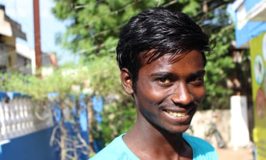

Each afternoon the men of Thennamadevi leave their village and head for the surrounding fields, many carrying bottles of high-strength home-brewed alcohol. Hours later they stagger back home through the paddy fields of the state of Tamil Nadu in southern India .
Thennamadevi is racked by alcoholism. Most of its 150 male inhabitants participate in ruinous daily drinking sessions . Around 90 women with families in the village have been widowed. The youngest husband to die was 21.
However, over the past six months something remarkable has happened to break the cycle of squalor and despair: the teenage daughters of the drunken men have taken over the running of the place. And it’s working.
A self-titled “young girls’ club” has fixed the street lights, completed a health audit of the village and ensured that mobile clinics visit Thennamadevi. A library is being built where well-thumbed books promote the virtues of learning and independence. The phenomenon of teenage female self-help has made aid agencies and politicians across the state sit up and take notice.
In the communal building, beneath the glow of a single lightbulb, the girls assembled earlier this month for a debate on further improvements. A petition urging better transport links – no buses pass near the village – has been drafted to be put to the local council.

Amudha Managatti with her family in their new home in Villupuram. They were rehoused after spending several years on the town’s station after fleeing Amudha’s heavy-drinking husbandPhotograph: Mark Townsend/The Observer
Debate is earnest, each discussion ending in a show of hands. Only when consensus is reached does the committee move to the next issue. “We are trying to transform our village by this process. We are empowered to be leaders,” said Says Sowmya, 16, president of the club.
Others are focused on more intimate issues, such as shepherding peers through adolescence. “I teach my friends on life skills such as personal hygiene, self-discipline and menstrual issues,” said Rajendhiran Sridevi, a 16-year-old “trainer”.
Sathiya Babu, deputy project director of Scope India , which helps deliver opportunities for the poor, said the gap between the ambitions of the young and the expectations of parents was widening. “The youngsters know that somebody has to do these things for the community. These girls are taking control of running the village. They want change.”
There is another incentive for the young women’s intervention. A sense of hopelessness had taken hold among Thennamadevi’s teenagers, prompting a number to flee in search of a better life. Sridevi and Sowmya have frequently discovered that friends have disappeared, heading towards cities such as Chennai and never heard of again. Local records reveal that at least 150 children from the area have attempted to run away.
Six kilometres from the village, via a labyrinthine network of tracks, lies the town of Villupuram and one of the most crucial rail stations in southern India. Built under the British, five major lines converge at Villupuram junction, connecting the country’s southern tip with Chennai and the east coast.
When Babu began investigating the Thennamadevi runaways, one common thread emerged: every one of them had passed through Villupuram station. He heard reports of other minors wandering platforms alone, their clothing torn and grubby. Some were naked.
Kannan Jeevanantham, 16, was spotted travelling alone at Villupuram train station after fleeing home to escape his father’s alcoholism.Photograph: Mark Townsend/The Observer
Scope’s international partner, the charity Railway Children , began encouraging the station’s 40 cleaners to report children travelling alone. Days before the Observer visited, a malnourishd eight-year-girl was found on platform six wearing only a T-shirt. More than 1,000 unaccompanied minors were found at the station in the two years to June 2017. When questioned, most explained they just wanted to see more of the world, although 49 said they were fleeing abuse and another 90 said they were seeking relatives.
One such was Magelier Kural, a shy 16-year-old from Thennamadevi. Kural had wanted to visit Pondicherry, 30km away on the coast. When cleaners found him on platform five, he was in tears and calling for his family. “I wanted to have new experiences and see some sights.”
Kannan Jeevanantham, 16, was spotted on platform one hoping to catch the train north to Chennai to escape his father’s drinking. “I had no plan, no money. I needed to escape,” said Jeevanantham, who is now studying at a technical institute and is among those delighted that the “young girls’ club” has assumed responsibility of his village.
Yet problems endure. Calls to Villupuram’s Childline in the year to this May illustrate the perils facing Thennamadevi’s children. Of almost 4,000 reported incidents, 3,016 involved petty crimes, 552 concerned children forced to beg, and 193 described cases of forced marriage, one documenting a 15-year-old being made to marry a man of 45. A further 39 calls heard claims of sexual abuse and 84 detailed children who had disappeared without trace.
Despite the best efforts of Railway Children, minors still vanish, sometimes taken by traffickers who use India’s vast rail network to move their human cargo . Villupuram’s platform cleaners are instructed to keep a particular lookout for groups of children led by one or maybe two adults.
Navin Sellaraju, Railway Children’s director for India, said: “These interventions are vital to protecting vulnerable children from trafficking and child labour.”
Speaking at the police station in Villupuram, the town’s anti-human trafficking officer, Chinnamariappan Padmashree, sifts through updates on criminals passing through the region. “Lots of children are being kidnapped and going missing,” she said. “We have many cases of sexual crimes, forced labour and kidnapping, crimes against women and children.”
All the children rescued belong to a lower caste, a factor that some believe makes children vulnerable to traffickers. Interviews found 70% belonged to the Sadhu caste, a fifth came from the “most backward” caste and 10% from the “backward” caste.

Chinnamariappan Padmashree, Villupuram’s anti-human trafficking officer, has to deal with ‘many cases of sexual crimes, forced labour and kidnapping’.Photograph: Mark Townsend/The Observer
Yet the biggest blight remains alcoholism, with entire families fleeing to the station. One such family is the Managattis who lived beside platform 1 for years. It was a fraught existence. Amudha Managatti describes struggling to keep her son and eight daughters safe. Her eldest, then aged 15, was targeted by abusers. “They took advantage of her, many people in the town were involved,” said Babu.
A deserted home was renovated for the family and the children given school places. Her eldest daughter is now married with her own family, a journey that proves that narratives can be amended.
For the teenagers running Thennamadevi it is the possibility of change that inspires them. Senior club member Gowsalya Radhakrishnan said: “By not accepting our fate we will give others the knowledge they can shape the future.”